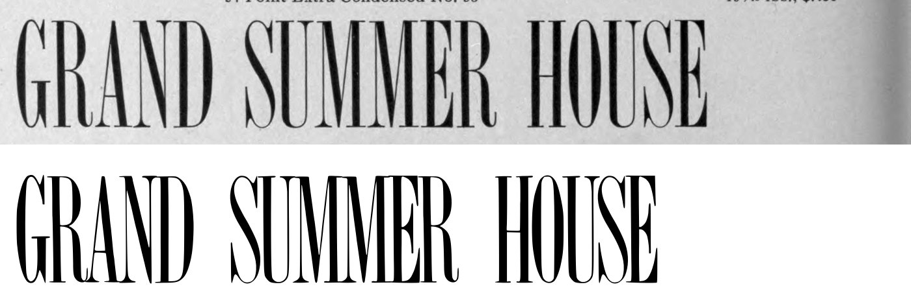
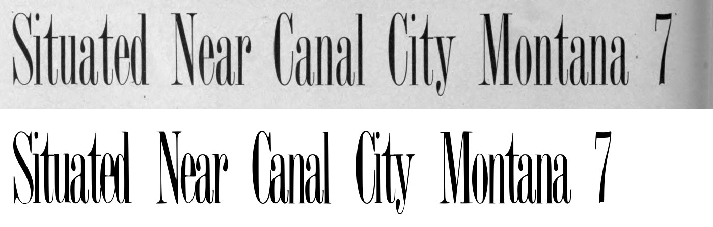
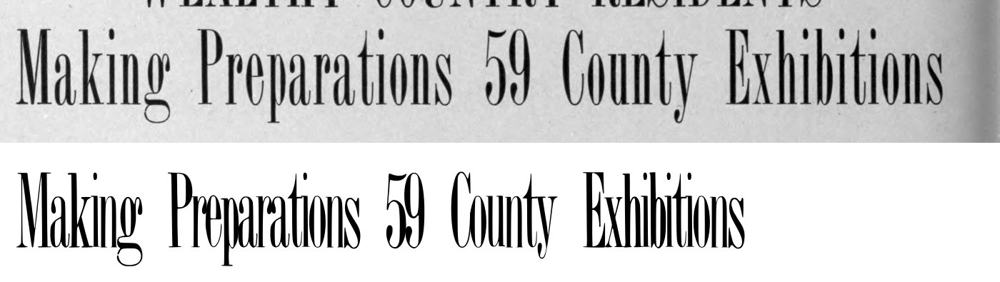
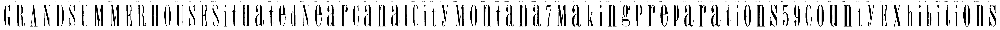

Gray letters are constructed, not traced.


0 warnings, 9 notes.
[
{
"level": "info",
"check": "specks",
"glyph": "S",
"value": 1,
"note": "marks beside the letter were recorded, not cut"
},
{
"level": "info",
"check": "specks",
"glyph": "U",
"value": 1,
"note": "marks beside the letter were recorded, not cut"
},
{
"level": "info",
"check": "specks",
"glyph": "S.54pt_2",
"value": 1,
"note": "marks beside the letter were recorded, not cut"
},
{
"level": "info",
"check": "specks",
"glyph": "i",
"value": 1,
"note": "marks beside the letter were recorded, not cut"
},
{
"level": "info",
"check": "specks",
"glyph": "a",
"value": 1,
"note": "marks beside the letter were recorded, not cut"
},
{
"level": "info",
"check": "specks",
"glyph": "t.54pt",
"value": 1,
"note": "marks beside the letter were recorded, not cut"
},
{
"level": "info",
"check": "specks",
"glyph": "d",
"value": 1,
"note": "marks beside the letter were recorded, not cut"
},
{
"level": "info",
"check": "specks",
"glyph": "a.54pt",
"value": 2,
"note": "marks beside the letter were recorded, not cut"
},
{
"level": "info",
"check": "specks",
"glyph": "r",
"value": 2,
"note": "marks beside the letter were recorded, not cut"
}
]
{
"72:54pt": {
"n_caps": 21,
"cap_height_px": 243,
"cap_source": "caps",
"baseline_px": 3242.0,
"baselines": {
"3": 3242.0,
"4": 3542
},
"glyphs": [
"G",
"R",
"A",
"N",
"D",
"S",
"U",
"M",
"M.54pt",
"E",
"R.54pt",
"H",
"O",
"U.54pt",
"S.54pt",
"E.54pt",
"S.54pt_2",
"i",
"t",
"u",
"a",
"t.54pt",
"e",
"d",
"N.54pt",
"e.54pt",
"a.54pt",
"r",
"C",
"a.54pt_2",
"n",
"a.54pt_3",
"l",
"C.54pt",
"i.54pt",
"t.54pt_2",
"y",
"M.54pt_2",
"o",
"n.54pt",
"t.54pt_3",
"a.54pt_4",
"n.54pt_2",
"a.54pt_5",
"seven"
],
"x_height_px": 167,
"figure_height_px": 241,
"stem_px": 5,
"scale": 2.88066,
"stem_units": 14.4,
"x_height": 481,
"figure_height": 694
},
"72:42pt": {
"n_caps": 4,
"cap_height_px": 180.5,
"cap_source": "caps",
"baseline_px": 2812.5,
"baselines": {
"2": 2812.5
},
"glyphs": [
"M.42pt",
"a.42pt",
"k",
"i.42pt",
"n.42pt",
"g",
"P",
"r.42pt",
"e.42pt",
"p",
"a.42pt_2",
"r.42pt_2",
"a.42pt_3",
"t.42pt",
"i.42pt_2",
"o.42pt",
"n.42pt_2",
"s",
"five",
"nine",
"C.42pt",
"o.42pt_2",
"u.42pt",
"n.42pt_3",
"t.42pt_2",
"y.42pt",
"E.42pt",
"x",
"h",
"i.42pt_3",
"b",
"i.42pt_4",
"t.42pt_3",
"i.42pt_5",
"o.42pt_3",
"n.42pt_4",
"s.42pt"
],
"x_height_px": 124,
"figure_height_px": 180.5,
"stem_px": 4.0,
"scale": 3.87812,
"stem_units": 15.5,
"x_height": 481,
"figure_height": 700
}
}
{
"archive_id": "bookoftypespecim00barnrich",
"title": "Book of type specimens. Comprising a large variety of superior copper-mixed types, rules, borders, galleys, printing presses, electric-welded chases, paper and card cutters, wood goods, book binding machinery etc., together with valuable information to the craft. Specimen book no.9",
"creator": [
"Barnhart, bros. & Spindler, firm, type founders, Chicago",
"De Young family",
"De Young, Charles, 1881-"
],
"publisher": "Chicago, Barnhart bros. & Spindler",
"date": "[1907]",
"ppi": 400,
"url": "https://archive.org/details/bookoftypespecim00barnrich",
"copyright_status": "NOT_IN_COPYRIGHT",
"contributor": "University of California Libraries",
"leaves": [
72
]
}